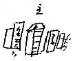
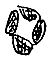

○床の間の上の長押に功七級金鵄勲章の金額のところはかくれるような工合に折った書類が 茶色の小さい木の椽に入ってかかっている、針金で。
○大きい木の椽に、勲八等の青色桐葉章を与う証が入っている。
「三万五千五百八十四号ヲ以テ勲等簿冊ニ記入ス」
書院の袋戸棚 四枚の芭蕉布にぼんやり雪舟まがいの山水を書いたもの、ふたところ三ところ小菊模様の更紗でついであって、いずれも
その上に 山静水音高 と書いた横ものがかかげられている。
○馬が三頭いた。二頭になり、やがて一匹で自動車。
麦を煮る、わらを切る、草をかう（二三十銭）
○前の田を寺からかりて試作する。肥料の。「あの肥料をつかってこないよう出来たと見せようちゅうところの」
苅ったところで達治とキャッチボール
○多賀さんの山 が右手
寺の山 左手
むこうはＡの家。
赤いみやこに襦袢で一日水づかいしている馬鹿でキリョウよしの女房
○家の並んで岬のように出ている四つの棟棟と棟との間に横タテに雨樋が通っている。
○家の中にいてきく雨樋の音、
○瓦のメジがころがりこんで樋がつまって溢れる、
○兼サアから魚を買う、自転車。うしろに魚かごをつけて。
前の家、トタン屋根、青く土のかびた土間、
裏、青みどろの浮いている水たまりを隔ててすぐ小高い線路
○三角形の空地 鶏、うさぎの棚。
○むこうの森 島田川
○家じゅうに戸棚が三尺の一間の一間ぐらいしかない。板の間に長持、その上に布団や何かごたごたつみ上げてある。さらさ 大きい嫁入紋のついた布団など。
○漬物がうまくつかっていない、うまいつけものをチビチビ食べるような暮しでない。激しくて。
○一つ角をまがって裏へ出ると もうすっかり田舎。（一側の町どおり。）
朝鮮人の藤色のチマが乾して、ある。
◎雪輪の中に梅と菊との花をすり出した、あとはくもりの小さい硝子の入った障子。
○白キャラコのカーテン。そのあおり、
東の表の欄間はすっかり形つなぎの硝子。こっちからなかなか風が入る。
○線路が見える。
黄色い羽形の上についた信号燈の色 赤、青（夜、）
○こわれた電燈カサが床の間の隅っこにいつからか置いてある。
○大雨
急行がとまっている。
「久栄で 白米一俵とりにきよった たき出しでもするじゃあろうて」
汽車／Kisha いんでてか？
麦の穂先だけのぞいている、
こっちの川を越すと店へ漬る、「水ちゅうもんは早うひくのう あんた」
大雨があがる、
晴天 碧い空に白い雲、西風爽か
山の松の幹もパラリとしてすがしく篁の柔かい若青葉がしなやかに瑞々しく重く見える
多賀さんの下の高みで、家組が出来て、人が働いている 白シャツ姿。
廻り椽。浅い池 椽のすぐ下まで。
青い実のついている梅 かさだけ時代もので、胴がよせもののとうろう、
つつじ
杉、しゃぼてんの鉢
――○――
かた木の庭木 大名竹 槇 周防の花
下ぬりのまま五六年たった壁。
床の間に紫檀の台、上に焼きもの。
どくろに蛙がとまっている飾もの
掛ものは歌集のきれ
くまもなきかゝ見と見ゆる月影に
こゝろうつさぬ人もあらしな 云々
○近さァを区長にせよう思っとったら洗濯もんの騒ぎしよったから どうとも云い出せんようになってしもうた
○野菜市場。近さん120［＃「120」は縦中横］本の胡瓜を「こりゃわしが皆ひきうけた」と二円何ぼかで買う。小商は、大きいが一本五銭なり。
よろしゅうあります
とんびース（飛の魚）
つかあせ
やっつかわせ（やっつか）ときこえる
さア、どんなもんでありましょうかな
えっと（沢山）切った
だいしょう 出来ます（多少の意味）
生えちょるか
恐れちょる
頭がはしる（痛む）
裏の田の畦づたいに中谷の婆さんが 国旗をかついで多賀さんの当番参詣を終ってかえって来る
「えろう御無礼どすが ここから通してもらいます」
多賀子
「あの武の字がちごうちょる」
武が※［＃「武」の「弋」が「戈」、583-8］の由。武運長久と書いてあったが
「武運長久が襷がけならいいんだろ。この頃は白襷がはやるから。こんど出来た字かもしれない」
○栗山の婆さん
「自殺すると云っちょるげな、息子に話しもめるさかい と云っちょる」